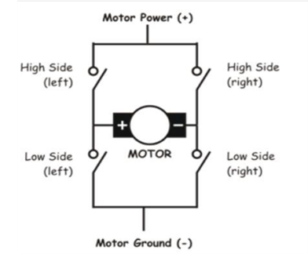
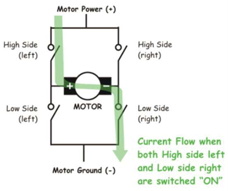
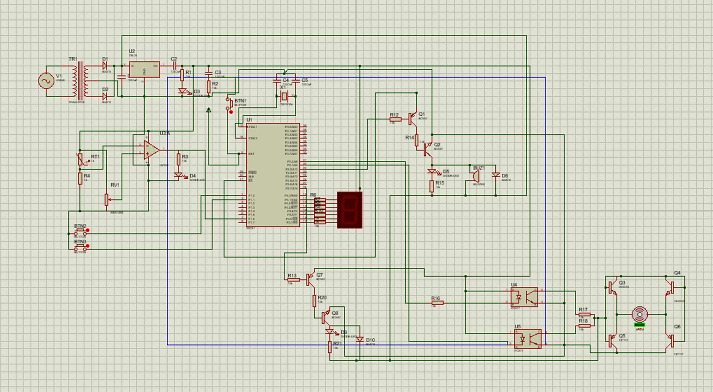
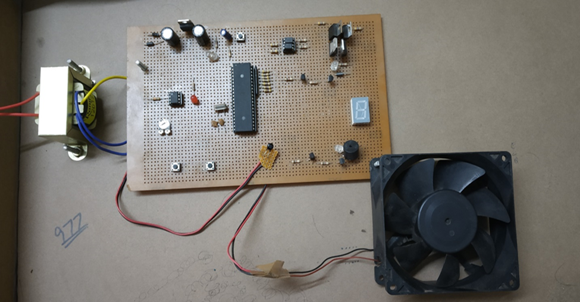

PWM-Based Speed Control of BLDC Motor with Overheating Protection
Overview
This project presents a cost-effective solution for speed control of a Brushless DC (BLDC) motor using Pulse Width Modulation (PWM) and includes overheating protection. The implementation uses the AT89S52 microcontroller and demonstrates how digital techniques can enable smooth motor control without mechanical brushes—reducing wear and maintenance costs.
Introduction
Brushless DC motors (BLDC) are increasingly favored for their high torque-to-weight ratio, energy efficiency, and quiet operation. However, precise and efficient speed control has long posed a challenge. This project tackles the problem using PWM-based control along with a microcontroller interface and temperature sensing mechanism to safeguard against overheating.
Objective
- Develop a closed-loop simulation and hardware prototype for controlling the speed of a BLDC motor using PWM.
- Enable user-driven speed variation via push buttons.
- Integrate an overheating protection system using a temperature sensor and buzzer alarm.
Key Components and Tools
-
Microcontroller : AT89S52
-
BLDC Motor
-
Opto-coupler, Transformer, Voltage Regulator
-
7-segment Display
-
Temperature Sensor & Buzzer
-
Simulation Software: KEIL (for embedded C), Proteus (for circuit design and testing)
System Workflow and Implementation
1. PWM Generation
PWM signals are generated via the microcontroller to control the switching of transistors in the H-Bridge, regulating voltage applied to the BLDC motor.
2. H-Bridge Control
An H-Bridge driver allows directional control of the current through the motor windings. By toggling switches in a specific sequence, rotation speed and direction are precisely controlled.


Suggested Figure: H-Bridge circuit configuration as used in the hardware setup (presentation slide: “Working of H-Bridge”).
3. Simulation and Tuning
The embedded code was written in C, compiled in KEIL, and simulated in Proteus to validate the circuit behavior before hardware implementation.

Suggested Figure: Proteus simulation layout with labeled components (slide: “PROTEUS SIMULATION”).
4. Hardware Design
After successful simulation, components were integrated onto a physical board. A push-button interface allowed for incremental speed changes, displayed on the 7-segment display. The system also reads temperature via a sensor to activate a buzzer in overheating scenarios.

Suggested Figure: Photograph of actual hardware setup (slide: “HARDWARE SETUP”).
Performance Summary
The final implementation successfully demonstrated the following:
- Stable speed control using PWM with digital input.
- Real-time temperature monitoring and alert system.
- Modular design suitable for various industrial applications including HVAC, automotive fans, and robotics.
Conclusion
This project validates the use of low-cost embedded solutions for the speed control of BLDC motors. The PWM method provides smooth motor acceleration and deceleration, while the thermal protection enhances reliability. With precise tuning and component integration, the system stands as a practical model for educational and industrial use cases.
Future Enhancements
While the current model operates in an open-loop configuration, adding a feedback mechanism such as a Hall effect sensor or tachometer can enable closed-loop control. This would ensure constant motor speed under varying load conditions, improving its robustness for commercial applications.